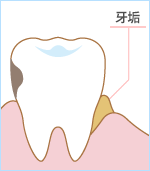

乳酸菌与口腔细菌
支援口腔内的有益菌
与皮肤和头发一样，认真做好呼吸的护理也很重要。
口腔里的细菌多的有些令人意外。让我们一起来学习口腔护理方法。
我们咨询了乳酸菌OLL2716株的开发者，担任日本益生菌学会理事长的东海大学医学系 古贺泰裕教授。
口腔里居住着很多细菌。与肠道一样，有菌落“口腔内菌群”存在。其中既有像乳酸菌那样的有益菌，也有有害菌。有害菌的代表人物就是引起牙周病的“牙龈卟啉菌”。这个东西靠吸收糖和蛋白质不断繁殖，不久便会破坏牙肉等牙组织引发炎症。当炎症导致出血后，它就会把血液当作营养进一步繁殖。那样的话，就像肉腐烂时一样。会排出甲烷和硫化氢，在口腔中散发强烈的恶臭。当牙周病症状严重时牙齿会从牙肉上脱落。
|
 |
|
牙龈卟啉菌非常喜欢附着在牙齿和牙龈之间的食物残渣=牙垢上。因为讨厌空气，所以会躲在牙垢里不断繁殖，形成黑色的菌落。说起牙垢，也不得不提导致虫牙的“变形链球菌”。变形链球菌以砂糖为基底，在周围形成黏糊糊的物质，释放出大量的乳酸。这种酸会溶解牙齿表面形成虫牙。虽然两者都能通过刷牙预防，但是一旦得上这种牙病，就会进入牙齿和牙龈里面，就再也够不着了。
|
|
 |
在这里乳酸菌应该登场了。也就是用有益菌去击退有害菌这种情况。在每天的饮食生活中，可方便摄取乳酸菌的酸奶效果值得期待。当然刷牙是第一位的。
|
|
※古贺教授与 Frente
公司共同研发的乳酸菌 |
唾液中的乳酸菌随着年龄的增长会持续减少，有调查结果显示，35-44岁的人群中约有30%，55岁以上的人群中约有50%的人※得牙周病。因此通过新的乳酸菌来支援有益菌是一件非常重要的工作。
到目前为止，病原菌靠抗生素杀菌是一种主流思路。但是现在已到了开始关注乳酸菌作用的时代了。它与益虫一样，作用稳定，对环境几乎没有任何伤害，对人体也没有副作用。这种微生物的积极作用被称为“益生作用”。希望能养成每天摄取乳酸菌的饮食习惯，保持口腔和肠道的健康。
※源自厚生劳动省《2005年牙科疾病实际情况调查》